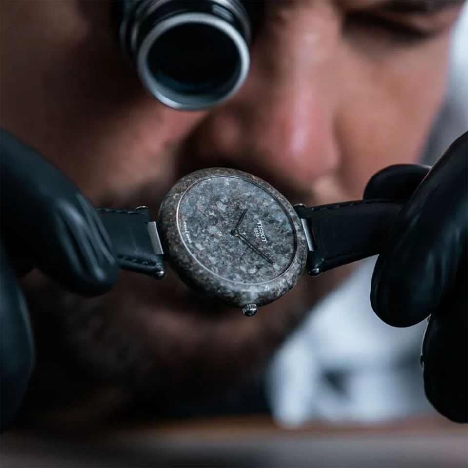
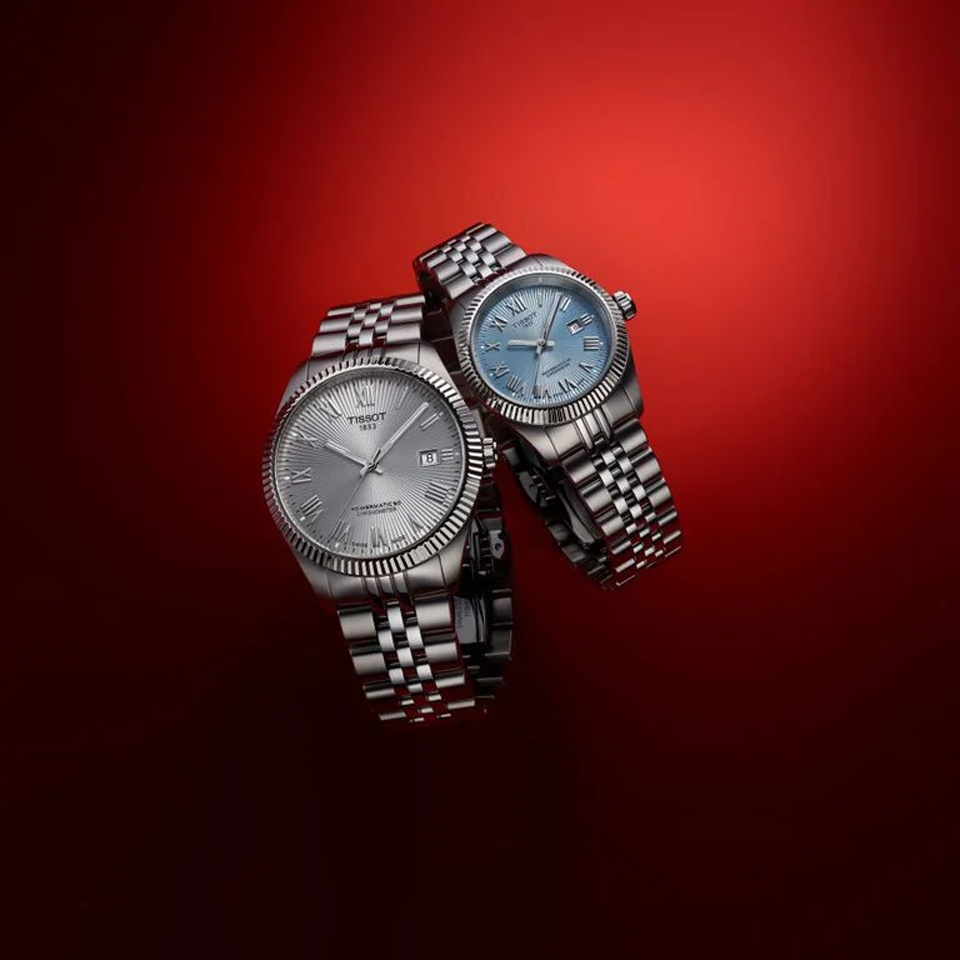
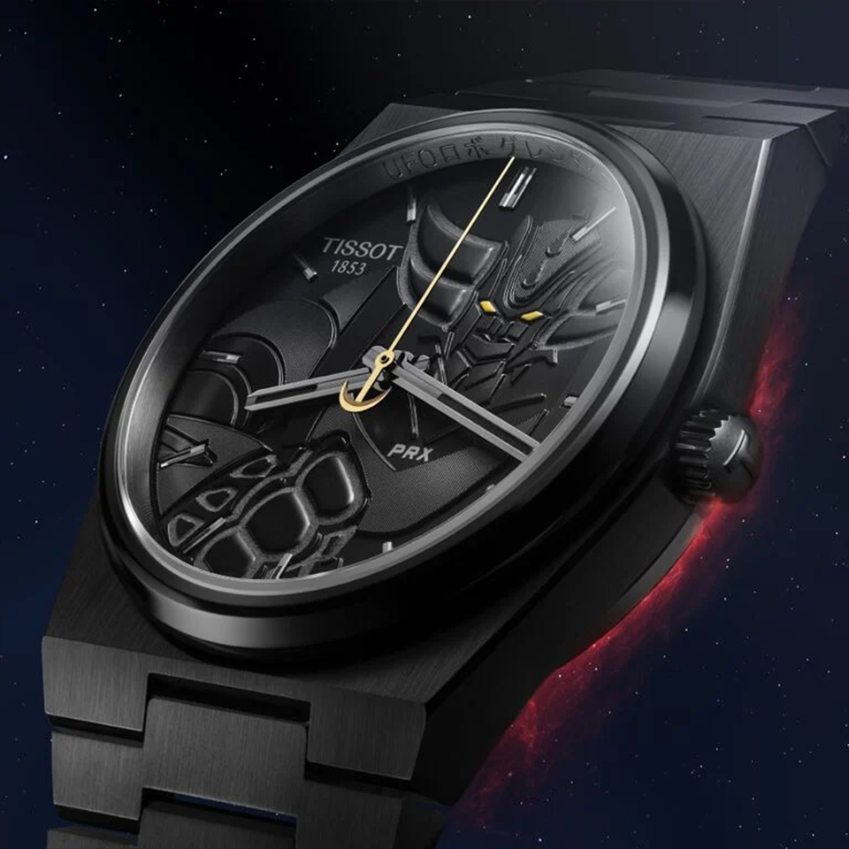
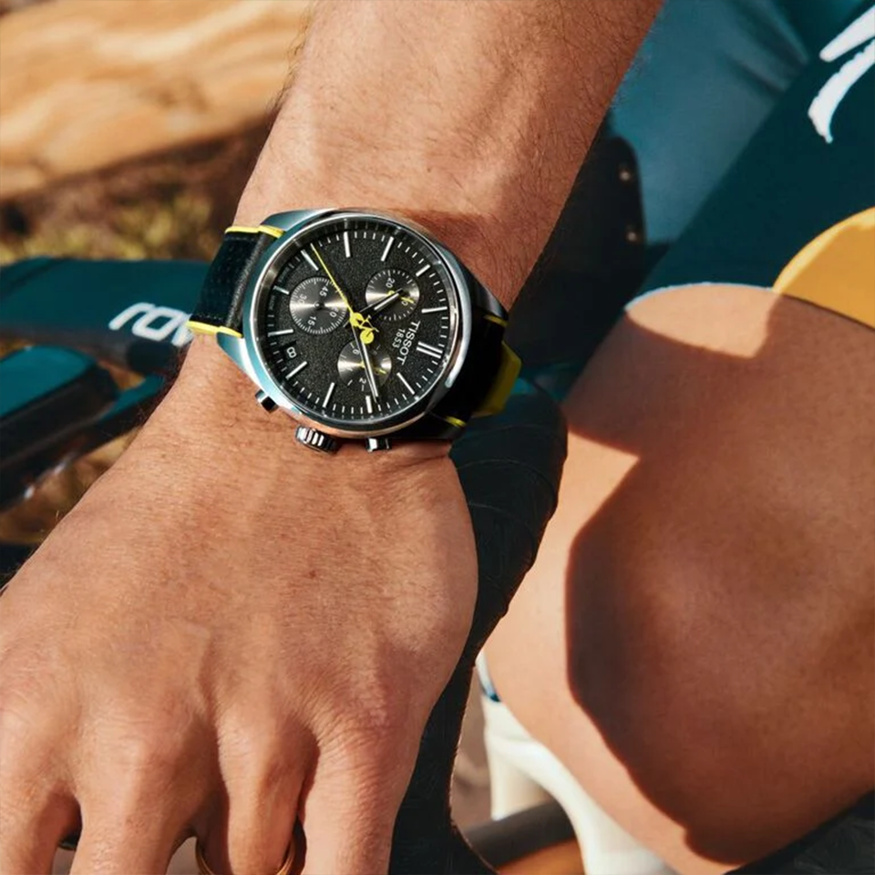
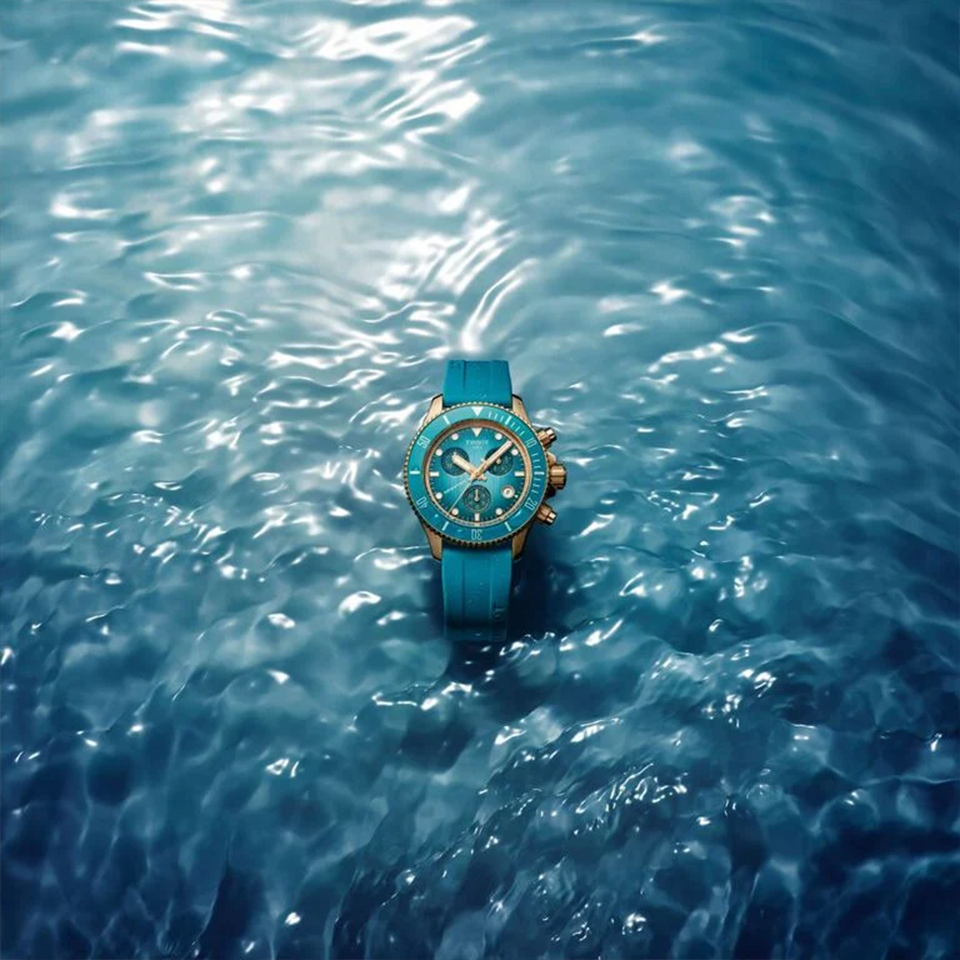

획기적인 시계 무브먼트: 파워매틱 80
티쏘는 2013년 최대 80시간의 놀라운 파워리저브와 탁월한 정확성을 갖춘 파워매틱 80 무브먼트로 시계 업계에 혁신을 가져왔습니다. 티쏘는 기존의 42시간 파워리저브를 넘어 워치메이킹 분야의 새로운 기준을 세웠습니다.

소재 혁신의 예술: PRX Powermatic 80 티타늄 & 다마스쿠스 스틸 에디션
티쏘는 클래식한 PRX 컬렉션을 새롭게 해석하며, 대담한 새로운 소재로 제작된 세 가지 38mm 오토매틱 모델을 선보입니다.

티쏘 클래식 드림 파워매틱 80: 모든 손목에 어울리는 스위스 오토매틱 시계
티쏘는 2013년 최대 80시간의 놀라운 파워리저브와 탁월한 정확성을 갖춘 파워매틱 80 무브먼트로 시계 업계에 혁신을 가져왔습니다. 티쏘는 기존의 42시간 파워리저브를 넘어 워치메이킹 분야의 새로운 기준을 세웠습니다.

락워치 석재로 빚어낸 시계 제작의 예술
락워치 자연과 스위스의 풍경, 그리고 스위스의 유산에서 영감을 얻은 티쏘는 소재 실험을 통해 전통적 디자인의 경계를 끊임없이 확장해 왔습니다.

발라드 COSC: 시간으로 빚어지고, 정밀함으로 증명되다
1853년 탄생한 티쏘는 세대를 정의하는 작품들을 통해 시간을 빚어왔습니다. 바다를 향한 Seastar, 레트로 감성을 담은 PRX, 레이싱 정신을 상징하는 PR 516까지, 티쏘는 시대를 대표하는 아이코닉 디자인을 선

추억의 혜성, 별들로부터 돌아오다: PRX 그랜다이저 50주년 기념 스페셜 에디션 보도자료
1975년 나가이 고에 의해 탄생한 전설적 작품 UFO 로봇 그랜다이저(UFO Robot Grendizer)의 50주년을 기념하여, PRX 그랜다이저 50주년 기념 스페셜 에디션이 출시됩니다. 1975 피스 한정으로 제작된 이

새로운 SRV와 함께 자신감 있는 룩을 완성하세요.
전 세계가 아르데코(Art Deco) 100주년을 기념하는 가운데, 티쏘는 대담한 기하학의 미학을 담아낸 새로운 타임피스 SRV를 선보입니다. 각진 실루엣과 보석처럼 깎인 입체 유리는 아르데코 시대의 대담함을 현대적으로 재해석한 디자인입니다.

PR100 및 티-터치 커넥트 스포츠와 함께 투르 드 프랑스를 달리는 티쏘
기술과 끈기로 움직이는 길 위에서, 미래는 언제나 열려 있습니다.

씨스타 크로노그래프 38mm: 심연에서 떠오른 새로운 사이즈
수십 년간 축적된 방수 시계 제작 노하우를 바탕으로, 티쏘는 씨스타 컬렉션에 새로운 사이즈를 더합니다. 씨스타의 역사에서 영감을 받은 38mm 크로노그래프는 과거의 유산을 계승하면서도 미래를 향해 나아갑니다.